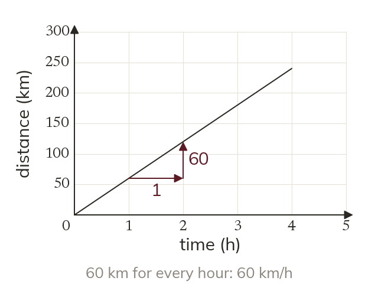
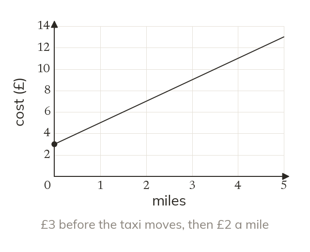
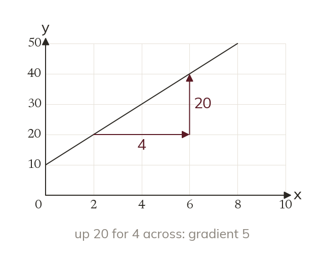
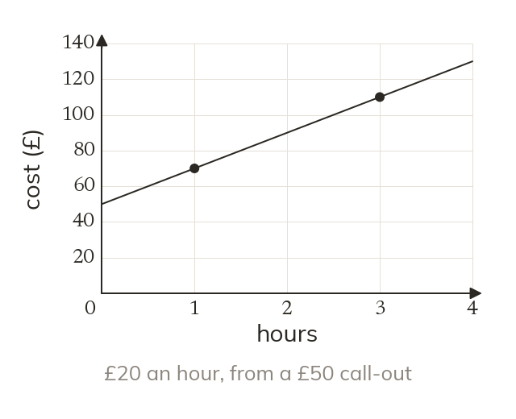
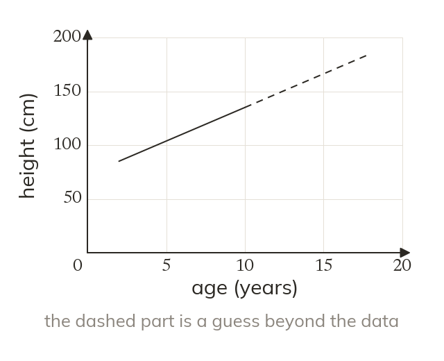

The gradient is a rate
The gradient is the y quantity per unit of the x quantity. Its units come from the two axes.
Phone contracts, taxi fares and a draining bath can all be modelled by straight lines. The gradient is the rate, and the intercept is the starting value.
Work down the page at your own pace. Write every answer in your book first, then click to check it.
Read each card, then follow the worked examples one step at a time.

The gradient is the y quantity per unit of the x quantity. Its units come from the two axes.

The intercept is the value of y when x is zero. On a cost graph it is a fixed charge.

The two axes may have different scales. So the gradient comes from values, not from squares.
Pick an answer. If it's wrong, the feedback tells you which mistake it was.
Read each card, then follow the worked examples one step at a time.

Two data points give the rate as a gradient. The model then follows as y = mx + c.

The data need not start at zero. So c comes from the model, not from the first value.

A model is trusted within the range of its data. Far outside it, the pattern may change.
Pick an answer. If it's wrong, the feedback tells you which mistake it was.
Finished? Next lesson: 10H.14.1 Perpendicular and Angle Bisectors.
Log in, then search for a code to practise that skill.
Videos, worksheets and more on each part of this lesson.